← Back to Projects
14 • Mixed-Use + Hospitality
ATHAR Makkah
An integrated Makkah destination where hotel, mixed-use residential terraces, retail, restaurants, clinics, offices and lifestyle spaces work as one development identity.
DIFFERENT ASSETS. ONE DESTINATION.
Design Narrative
The project becomes more valuable when hotel, mixed-use, retail, movement and public realm stop behaving as separate assets and start acting as one destination.
The project asks how a site in Makkah can become more than buildings: a destination with identity, operation logic, investment value and a memorable user journey.
Hotel as vertical landmark; terraced mixed-use block as active destination; pedestrian heart as the project’s social and commercial connector.
Hotel landmarkMixed-use terraced blockRetail + F&B frontageArrival plazaPedestrian heartAmenity deck
Strategic Lens — Integrated Destination Value
How can two major assets create one recognizable Makkah destination with stronger operation, experience and commercial logic?
Let the hotel act as gateway, the mixed-use block as active urban edge, and the pedestrian heart as connector.
Terraced residential living, active commercial frontage, hotel amenities and an arrival plaza are composed as one operational story.
Different products, one identity: landmark hotel + terraced mixed-use + pedestrian lifestyle spine.
Integration creates more value than adjacency because each asset strengthens the visibility and experience of the others.
Curated Visual Gallery
ATHAR Makkah
A visual sequence of architecture, atmosphere, movement and detail.

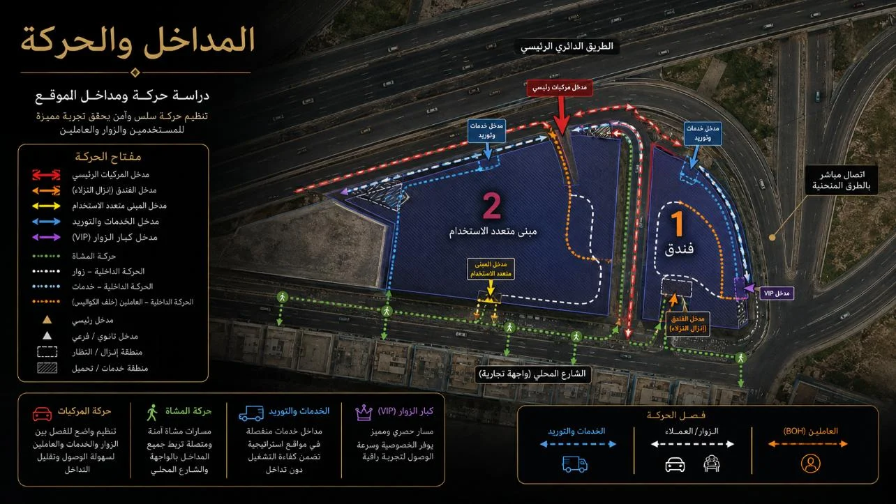
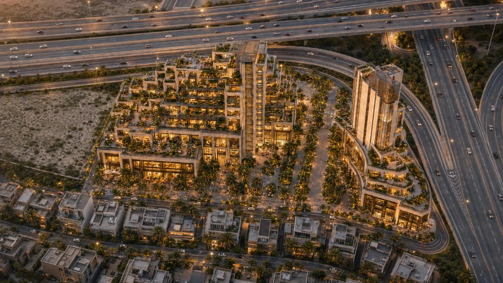
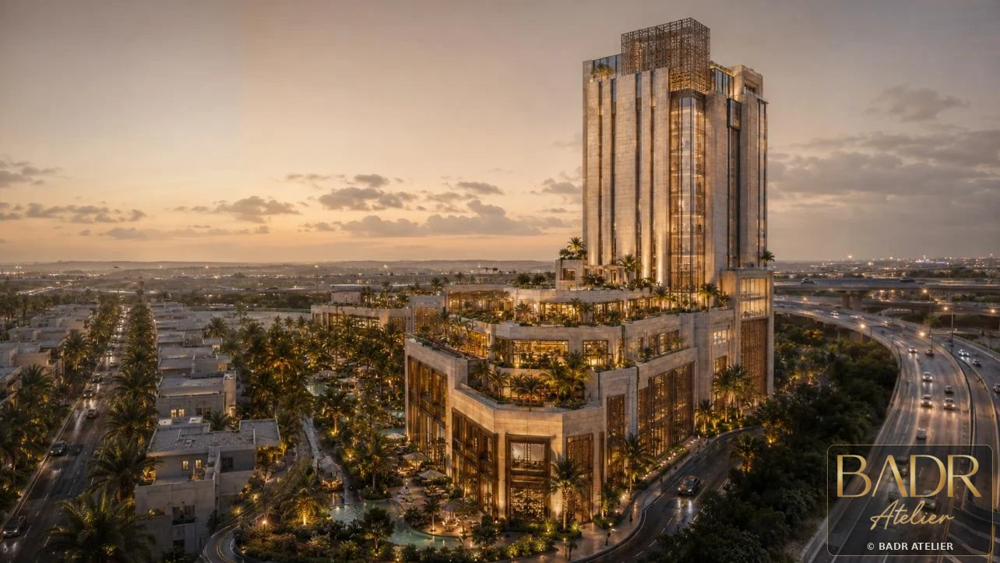
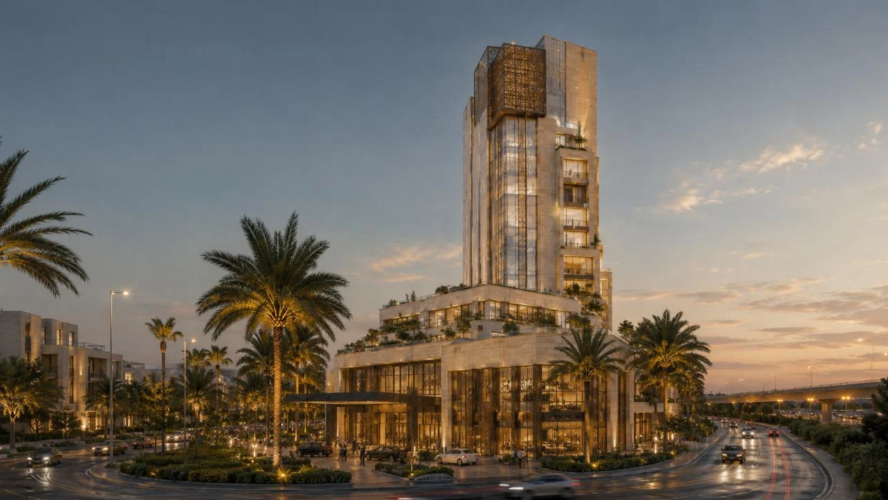
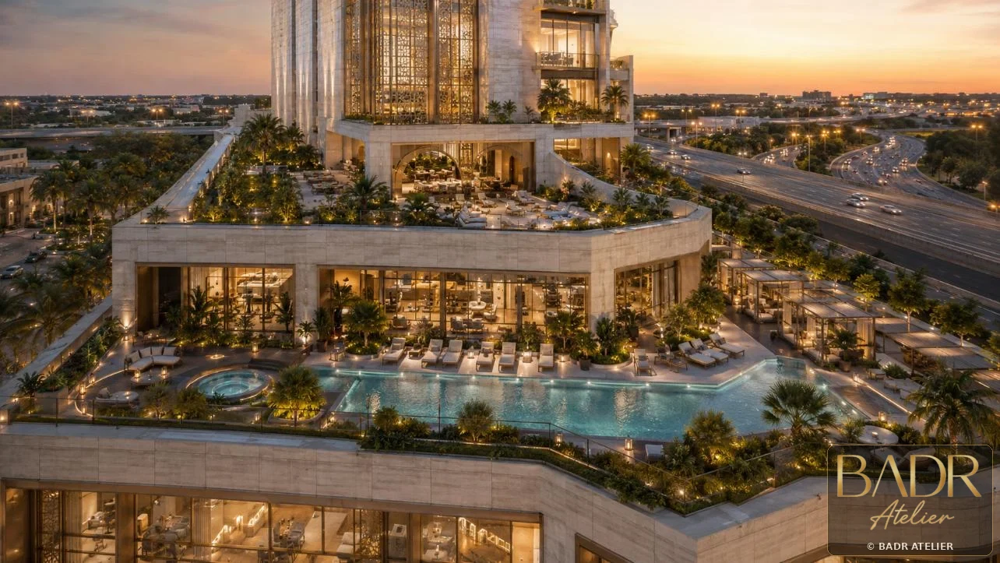
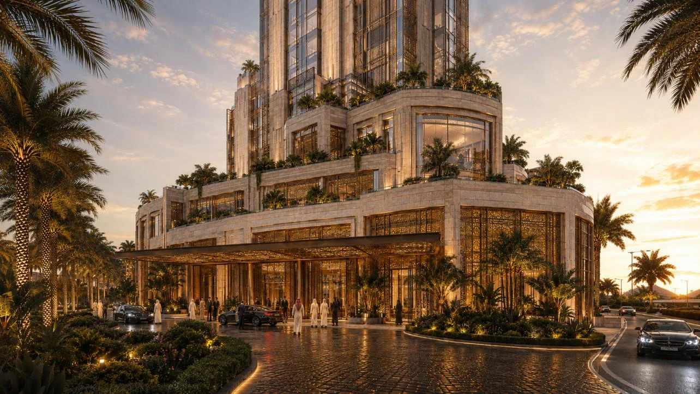
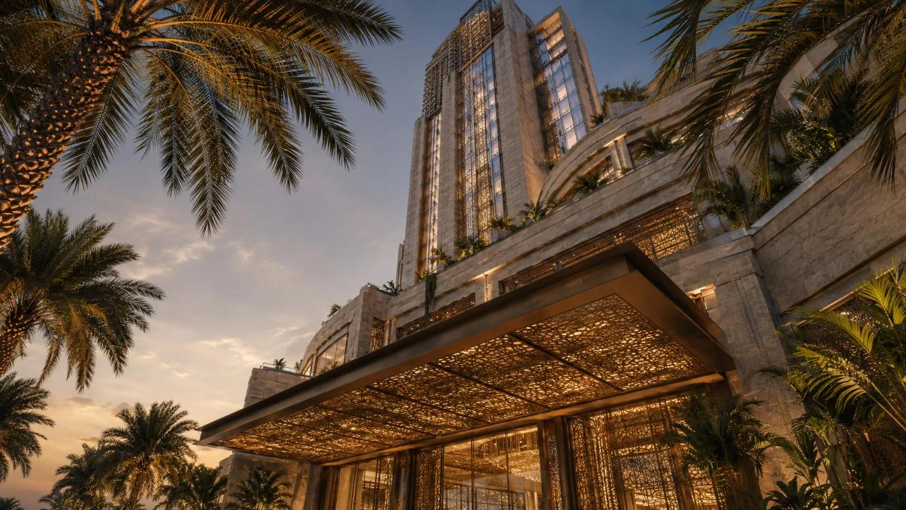
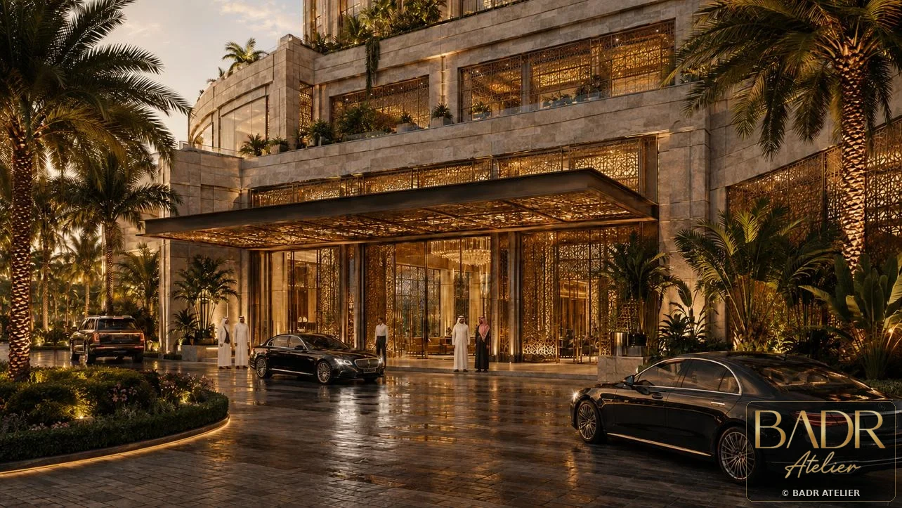
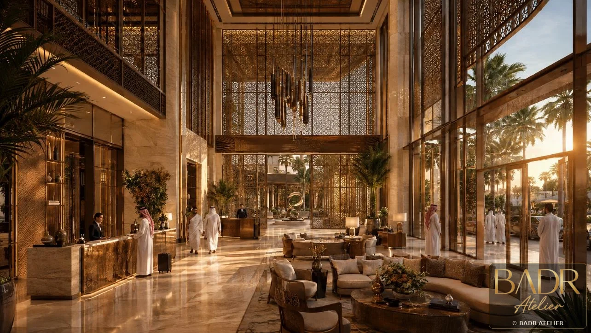
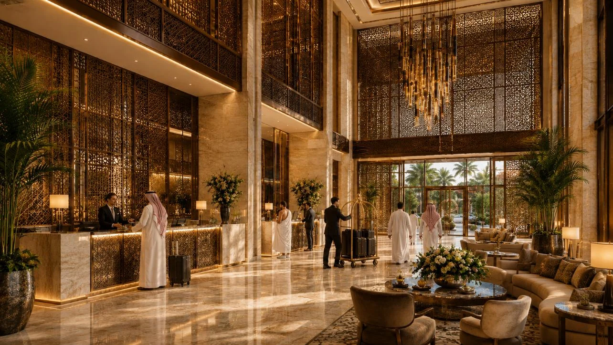
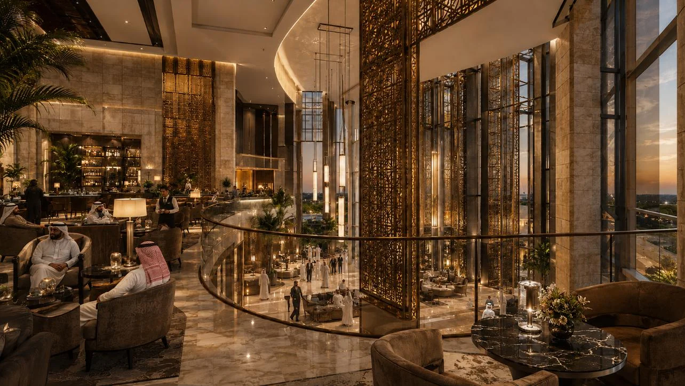
Key Features
- Hotel landmark
- Mixed-use terraced block
- Retail + F&B frontage
- Arrival plaza
- Pedestrian heart
- Amenity deck
- VIP drop-off
- Night identity
Spaces + Experiences
- Hotel lobby
- F&B terraces
- Lifestyle deck
- Residential terraces
- Retail street
- Urban arrival plaza
- Pedestrian spine
- Mixed-use podium